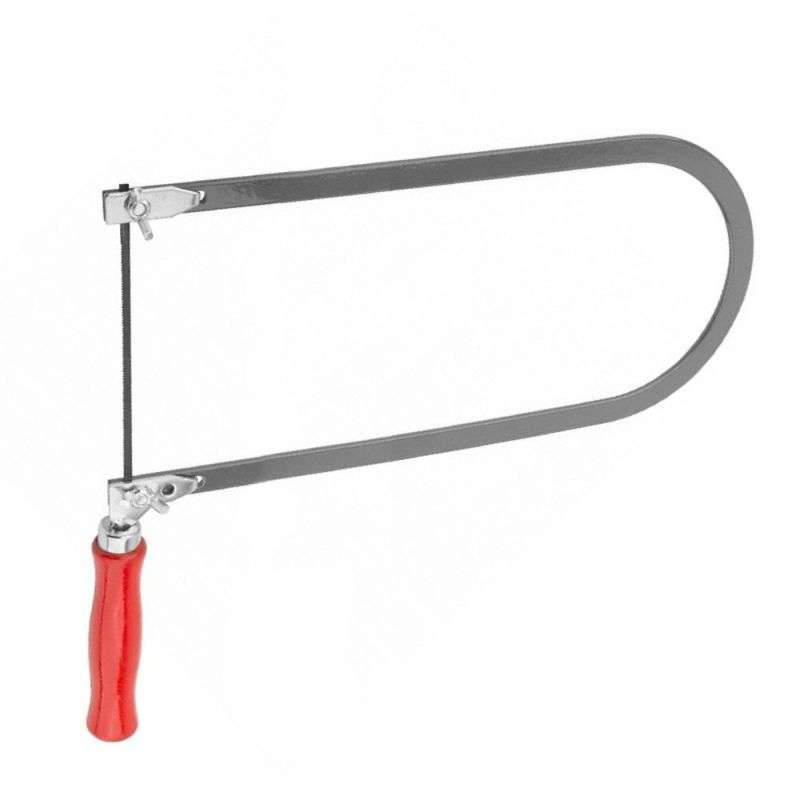
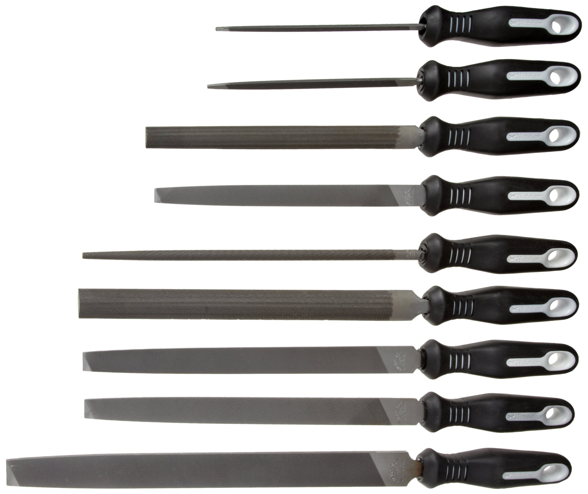
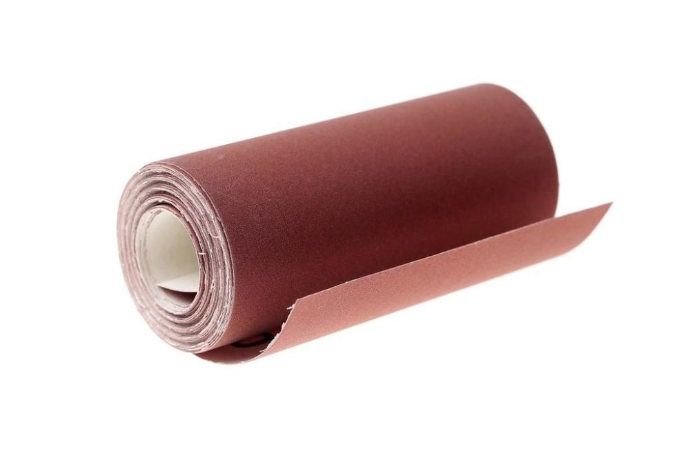
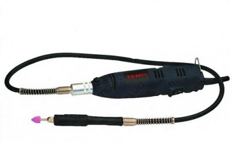
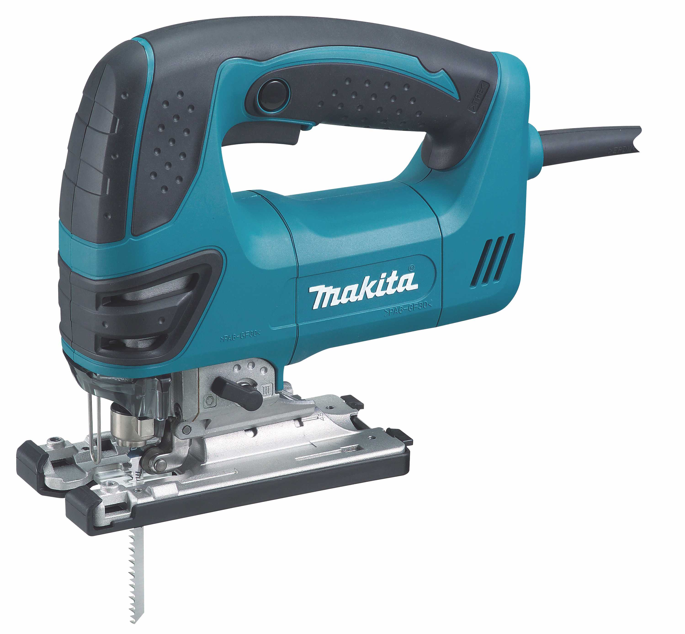

Обычный лобзик является универсальным и практичным инструментом, который помогает выполнять лишь одно действие – разрезание тонкого материала. Но это вовсе не означает, что лобзик не применяют для других целей. К примеру, он часто помогает заменить циркулярную пилу или даже ручную ножовку.
Напильники предназначены для удаления тонкого слоя древесины. В результате этого поверхность заготовки становится ровной и приобретает нужную форму. Аналогичные задачи может выполнять и шлифовальная машинка. Однако ею очень сложно работать, когда необходимо выполнять тонкие виды работ или детали слишком мелкие. В зависимости от того, как выглядит рабочая часть, инструменты делят на виды. Они отличаются универсальностью и могут одинаково хорошо подходить как для работ с деревом, так и с металлом.
Абразивная или наждачная бумага — это материал, который представляет собой абразив на гибкой основе для ручной или аппаратной обработки различных материалов. Есть наждак для металла, древесины, пластика, стекла. Применяют иногда и для обработки штукатурки и шпатлевки, но для этих целей удобнее может быть шлифовочная сетка.
Гравер, называемый по-другому мини-дрелью, дремелем, прямошлифовальной машинкой или бормашиной – это многофункциональный инструмент. С его помощью не только наносят гравировку, но и сверлят, шлифуют и выполняют другие операции по обработке разных материалов, например, дерева, металла, стекла, камня. Устройство широко используют как в быту, так и в различных отраслях промышленности, в ювелирном деле, при создании рекламной и сувенирной продукции. Все многообразие функциональных возможностей оборудования связано с тем, что существуют различные насадки для гравера.
Электролобзик – электрический компактный ручной инструмент, предназначенный для распила древесины, металла, пластика и других материалов. Он оснащается пилочкой, которая совершает возвратно-поступательные движения. Мощьность и скорость выполнения работы с этим прибором выше, чем у обычного лобзика. Однако плотники и столяры им практически не пользуются в связи с низкой точностью выполнения реза.

Шуруповерт - ручной или пневматический инструмент с
регулировкой крутящего момента и глубины завинчивания,
предназначенный для закручивания и откручивания
шурупов, саморезов, винтов, а также сверления отверстий.
Электрический шуруповёрт работает от аккумуляторной
батареи или от внешнего источника тока,
пневматический
шуруповёрт — от компрессора.